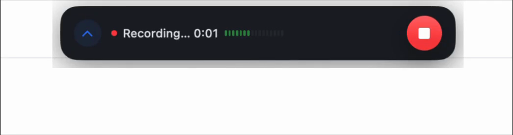
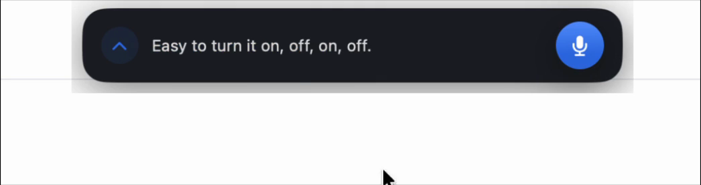
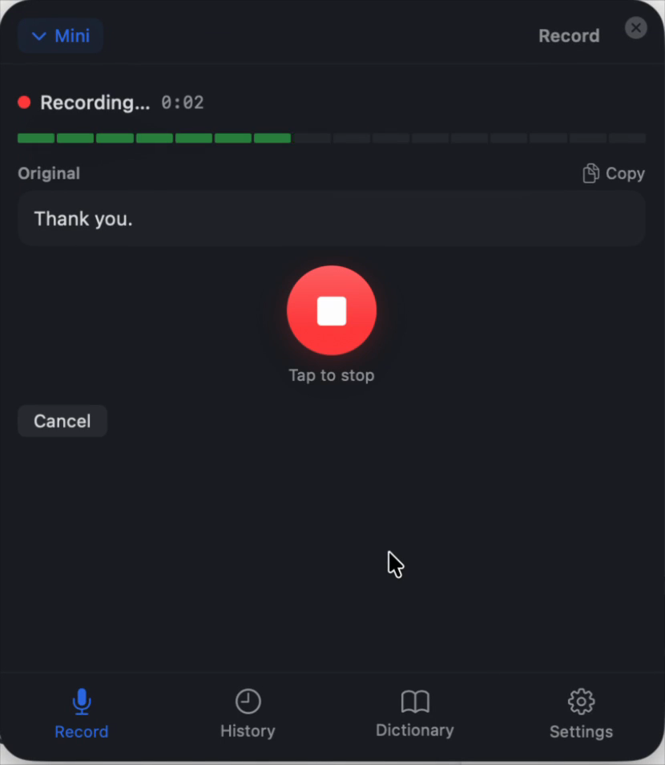
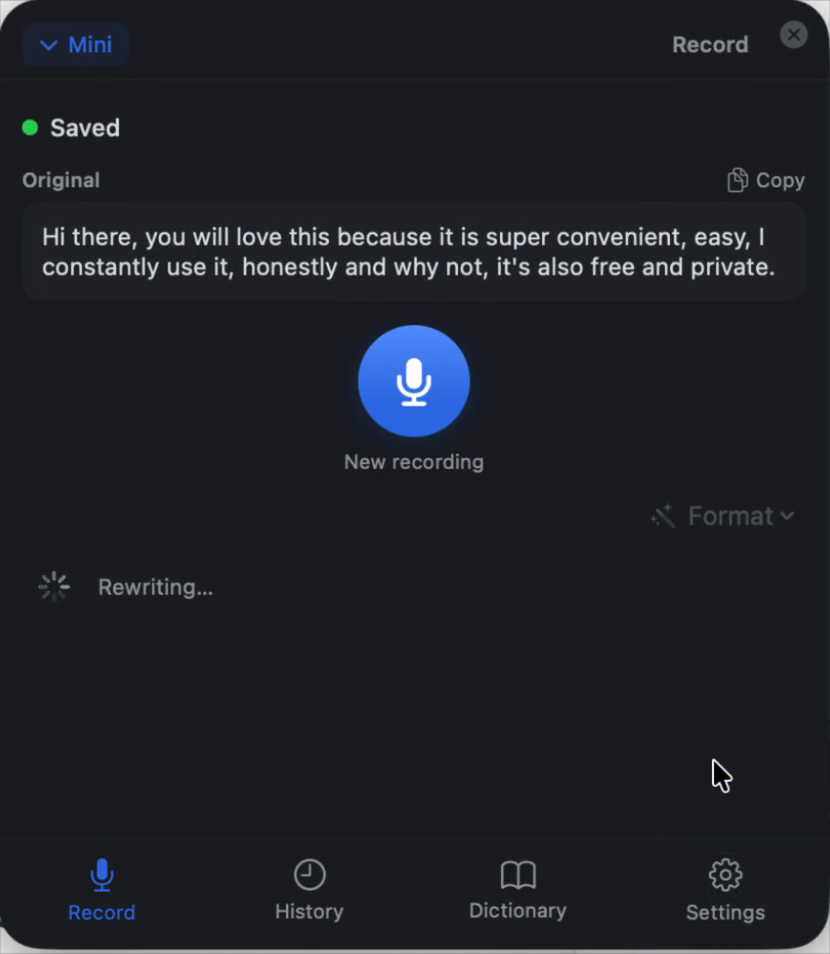
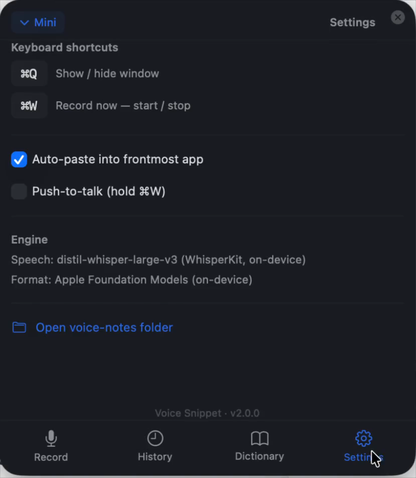

Record anywhere
Start from the floating widget or a global shortcut while you are writing, browsing, or moving between apps.
Mac app · local-first · open source
A tiny floating Mac app for turning spoken thoughts into clean text. Press a shortcut, talk, and get a transcript on your clipboard without sending audio to a cloud API.
Apple Silicon Mac · macOS 26+ · Apple Intelligence for rewrite styles
Watch the whole flow in 41 seconds.
Daily flow
Start from the floating widget or a global shortcut while you are writing, browsing, or moving between apps.
WhisperKit runs on your Mac. Audio stays on-device, and the first model download is cached for future recordings.
Use on-device Apple Foundation Models to turn rough speech into clean notes, bullets, emails, or polished text.
Window modes
Voice Snippet remembers the way you left it, so it can live as a small recorder or open into the full workspace for history, dictionary, and settings.


Inside the app



Privacy model
Voice Snippet uses WhisperKit for speech-to-text and Apple Foundation Models for rewrite styles. The app makes one network request path for first-run Whisper model download; daily transcription and formatting run locally.
Install